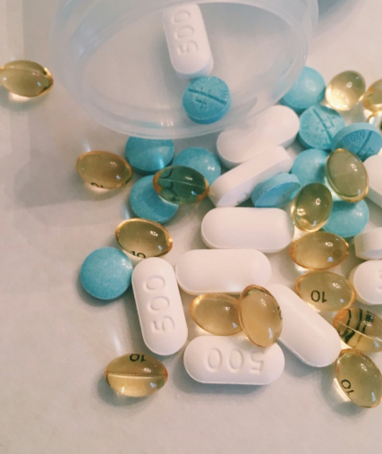
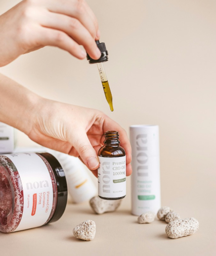

사회공헌
-
민족기업인 신풍제약은 한민족의 발전과 번영을 위해 1980년대 중반 이후 WHO를 비롯하여 국제 세계은행(World Bank)의 공공부문을 통하여, 토양 매개 기생충 치료제인 메벤다졸, 알벤다졸 및 주혈흡충 치료제, 프라지퀀텔의 원료와 완제품을 공급한 주 공급처입니다.
-
또한 신풍제약창업자 장용택회장의 선친이신 의사이며 제약 인이셨던 고 장창보회장의 의약보국의 숭고한 유지를 받들기 위해 “신풍호월학술상”을 제정하여 의약학계의 초석을 다지고 있습니다.
의약학계의 신약개발기반조성을 위한 산학협동의 밑거름이 될 것으로 확신하며, 앞으로도 권위와 내실 있는 학술상으로 자리매김할 수 있도록 시상학회 및 상금을 점차 확대하여 나갈 것입니다.
-
1997년이후 2007년까지 유니세프를 통하여 1억 7천만 정 이상의 아스피린, 650만 정의 알벤다졸, 6천 2백만 정 이상의 메벤다졸, 천만 정의 메트로니다졸, 260만 정의 프라지퀀텔 제품과 여타 메틸도파, 크리스탄 정, 세파클러 서스펜션을 공급하였습니다.
-
1999년부터 WHO와의 협력은 2007년 말까지 1,600만 정 이상의 프라지퀀텔, 600만 정 이상의 알벤다졸과 1,800만 정의 메벤다졸을 아프리카 전역, 중남미, 동남아시아 지역에 공급하였습니다.
 -
2004년부터 SCI를 통하여 7,500만 정의 프라지퀀텔/알벤다졸을 말리, 니제르, 탄자니아, 브룬디, 우간다, 버키나파소 등의 사하라 이남 아프리카 지역 취학 연령 아동에게 공급하였습니다.
또한 건강 관리 협회를 통하여 13만 정의 프라지퀀텔/140만 정의 알벤다졸을 캄보디아, 30,000정의 프라지퀀텔/3,000,000정의 Albendazole tab.과 여타 제품을 북한, 205,000정의 Praziquantel tab./555,000million정의 Albendazole tab.을 라오스에 공급하였습니다. -
2007년부터 한국보건의료재단을 통하여 10,000정의 알벤다졸/10,000정의 프라지퀀텔/20,000정의 이버멕틴을 탄자니아 기생충사업에 기부하였으며, 2008년부터 한국보건의료재단을 통하여 52만 정의 알벤다졸/52만 정의 프라지퀀텔/50,000정의 이버멕틴을 라오스 관리사업에 공급 예정입니다.
